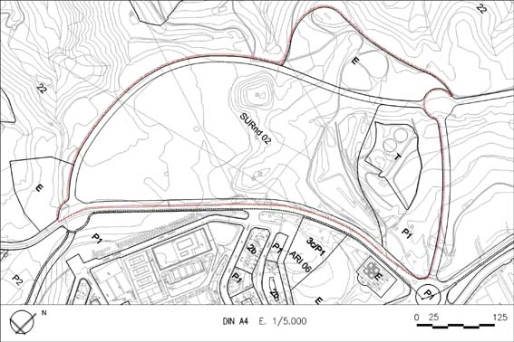

02 “Sector Guineua sud” (Sòl Urbanitzable no delimitat SURnd – 02)

Objectiu: Creixement del nucli cap al nord-oest, amb zona residencial i indústria urbana i terciari.
Nova zona esportiva i equipament sanitari-assistencial. Reserva pel nou cementiri. Transformació de l’antiga carretera en el nou passeig.
Règim del sòl: Sòl Urbanitzable no delimitat (SURnd)
| Superfície del polígon: Ordenació (plànol indicatiu) Sistemes urbanístics de cessió: Viari (V) Espais lliures (P1) (1) Serveis tècnics Equipaments (E) (2) Altres cessions Zones edificables: |
148.606 m2s segons PPD inclosa variant segons PPD i DL 1/2005 segons PPD segons PPD i DL 1/2005 a més a més del sistema general E destinat a nou cementiri 10% de l’aprofitament urbanístic del sector segons PPD |
Coeficient d’edificabilitat bruta (CEB): Nombre màxim d’habitatges: Règim HRL : 65% SH Règim HPC: 10% Règim HPO : 25% SH Règim HP lloguer : |
0,2944 m2st/m2s 212 hab. 112 viv. 25 viv. 75 viv. |